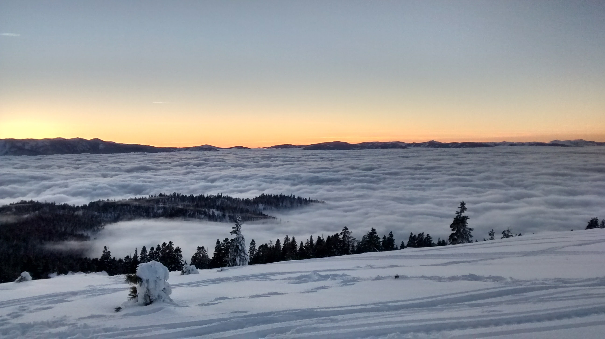

Lab 16: Fancy CSS II

Purpose:
The purpose of Lab 16 is to experiment with even more techniques of CSS that we learned in our lecture and to be able to apply them to our webpages.
Challenges:
We didn't face any challenges when completing Lab 16. We were able to build upon our CSS from our previous lab in order to make it easier for us.
Results:
Displayed in our webpage are the results of Lab 16. Please refer to our CSS link in order to see what other elements we implemented.